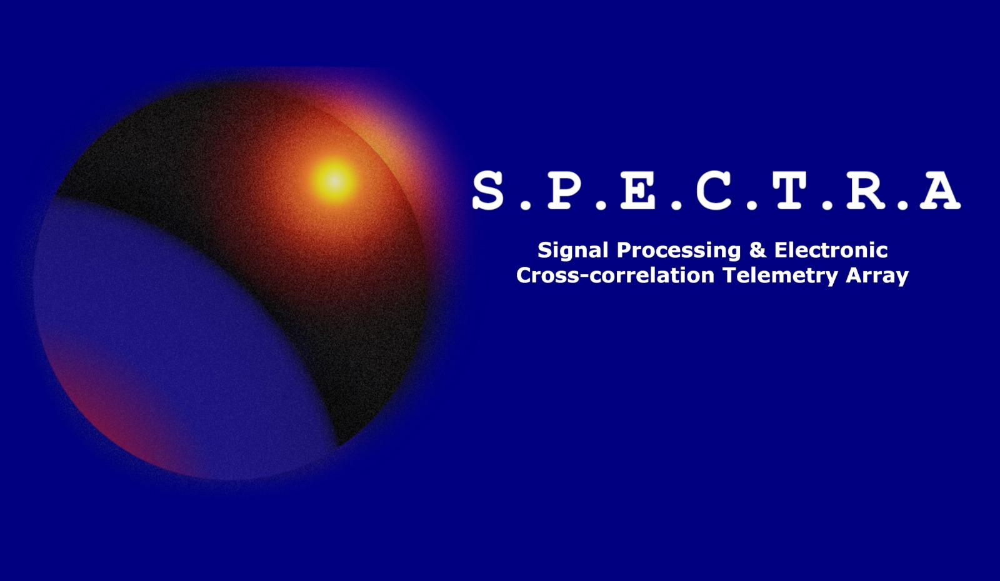

PORTAL TÉCNICO / RADIOASTRONOMIA
S.P.E.C.T.R.A — histórico atualizado até 23.0.1
O portal reúne o hardware clássico do laboratório e a evolução documentada do S.P.E.C.T.R.A. O histórico original de 105 versões, da 1.0.0 à 23.0.1.
23.0.1pacote mais recente recebido
105entradas entre as duas séries
+500arquivos de fonte e módulos
1420.405 MHzRF padrão preservada no projeto
ARQUIVO DE CÓDIGO DOCUMENTADO
ENTRAR NO PORTAL
VER TODAS AS VERSÕES
A sequência acompanha a passagem da captura/FFT inicial ao cluster, geometria e SANDBOX 3D, astrometria UVW, pipeline científico, Observatório, Aurelius, arquitetura FX, gestão de memória, visualização galáctica e ciência de áudio.